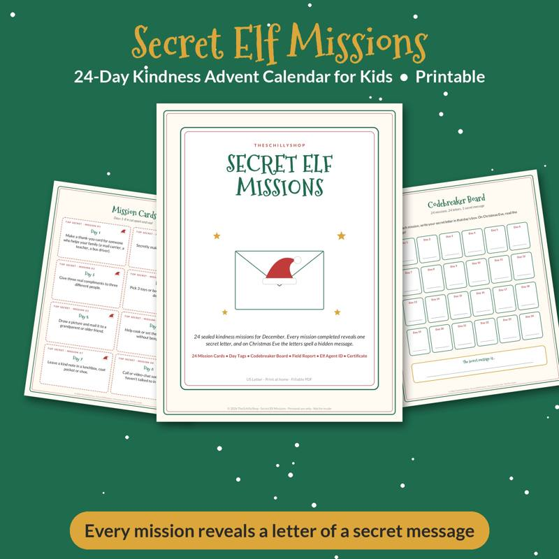

Teacher Gift Ideas From the Whole Class (Thoughtful and Budget-Friendly)
A class gift is one of the most meaningful ways to thank a teacher. Instead of a desk covered in individual mugs and candles, the class comes together for one thoughtful gift. Teachers often say the gifts they treasure most are the personal ones — notes, drawings and words from their students. Here's how to organize a class gift and ideas that hit the mark.
How to organize a class gift
1. Find an organizer
A room parent or a volunteer parent coordinates. Check with the school about any gift policies first; some schools set limits on gift value.
2. Choose a date
Common times: winter break, Teacher Appreciation Week, and the end of the school year.
3. Set a suggested contribution
Make contributions optional and anonymous. A small suggested amount (or "any amount") keeps it inclusive. Never list who gave and who didn't.
4. Collect easily
Envelopes sent home, a digital payment app or a simple sign-up form. Give a deadline about one week before the gift date.
5. Include every student
Even if a family can't contribute money, every child can sign a card, draw a picture or write a note. The gift is from the whole class.
Gift ideas teachers appreciate
Gift cards
Practical and flexible. Popular choices: local coffee shops, bookstores, restaurants, general retailers or school-supply stores. A combined class gift card can be generous even with small contributions.
Classroom supplies wish list
Ask the teacher for a wish list, or check whether they have a public one. Teachers often spend their own money on supplies.
Personalized class book
Each student creates a page: a drawing, a favorite memory, or "what I learned this year." Bind the pages into a book.
Class promise coupon book
Instead of objects, students give promises: "We promise to line up quietly on the first try," "We promise to clean up without being asked," "One day of homework turned in perfectly on time." The teacher "redeems" coupons throughout the year. It's funny, heartfelt and gives the class something to live up to.
Our Class Promise Coupon Book is a printable version with ready-made promise coupons plus blank ones so students can write their own and sign the cover.
Experience gifts
A movie night gift card, a museum membership, a restaurant gift certificate or a massage voucher.
Plants
A hardy plant for the classroom or home — pothos, snake plants and succulents are easy to care for.
Self-care basket
Lotion, nice tea, a cozy blanket, a candle, chocolates — pooled from the class into one generous basket.
Class photo frame
A framed class photo signed by every student around the mat.
What to avoid
Teachers receive many of the same gifts year after year. Try to avoid:
- Mugs (unless filled with something special)
- Apple-themed knickknacks
- Scented items, unless you know the teacher's preference
- Homemade food, unless you know they enjoy it (some teachers can't accept it for allergy or policy reasons)
Don't forget the note
The most powerful part of any teacher gift is the message. Encourage students to write specifically:
- "Thank you for helping me with fractions."
- "I liked when you read us that book in the reading corner."
- "You made me feel brave when I gave my presentation."
Parents can add a note too — a specific thank-you about how their child grew this year means a lot.
Gifts for other school staff
Consider a small class gift or card for:
- Classroom aides and paraprofessionals
- Specials teachers (art, music, PE, library)
- Office staff
- Custodians
- Bus drivers
- Lunch staff
A card signed by the class goes a long way.
Kindness as a gift
Around the holidays, some classes focus on giving kindness rather than objects. A class kindness challenge — doing one small act of kindness each day — is a gift to the teacher and the school. Our Secret Elf Kindness Missions cards are designed for families but work well for a classroom countdown too.
Timeline for a winter break class gift
- Early December: organizer sends a note and collection details.
- Two weeks before break: contribution deadline; students make cards or pages.
- One week before break: purchase gift, assemble book or coupons.
- Last day before break: present the gift with the class.
A class gift is ultimately about gratitude. A little organization and a lot of personal notes turn even a modest gift into something a teacher will keep. Looking for activities over winter break? See our snow day activities for kids.

A printable coupon book of class promises, signed by students, as a teacher gift.
See it on Payhip
Shop the printables mentioned
Class Promise Coupon Book Teacher Gift
A printable coupon book of class promises, signed by students, as a teacher gift.
View on Payhip
Secret Elf Kindness Missions
24 secret elf mission cards for a kindness advent calendar.
View on PayhipMore guides
- Baby Shower Prediction Game Ideas (and How to Run Them)
- Bridal Shower Games That Aren't Cringe
- Chili Cook-Off Rules and Scoring: A Complete Host Guide
- Christmas Party Games for Adults (No Supplies Needed)
- Cookie Exchange Party Ideas: How to Host a Christmas Cookie Swap
- A Family Chore System That Actually Works
- Galentine's Party Games Your Friends Will Actually Love
- The Meal Planning Game: How to Get Your Family to Help Plan Dinners
- New Year's Eve Family Traditions Kids Will Love
- Snow Day Activities for Kids: 30 Ideas Indoors and Out
- Thanksgiving Kids Table Activities That Keep Them Busy
- Ugly Sweater Contest Ideas: Categories, Judging and Fun Twists
- Vacation Rental Cleaning Checklist: Room-by-Room Turnover Guide
- Valentine's Escape Room for Couples at Home: How to Set One Up